4 House Data Exploration
4.1 Data Description
I have spatially merged all house sales from the HM Land Registry data to nearby sewage spill sites within a 5km radius. This dataset includes, for each house sale, all sewage spill sites within that range, along with their respective distances and spill severity, measured by frequency and duration. This lookup database allows for filtering by spatial distance or time. Below is a visual representation of three house sales in London.
4.2 House Price Descriptive Statistics
House prices are strongly positively skewed approximate a log-normal distribution, though with heavier tails than expected under normality. There is heterogeneity in prices across house types. Overall, this suggests the need for trimming (if we believe that the ‘outliers’ don’t belong to the distribution, but are of another kind) or winsorisation (if we believe that the ‘outliers’ belong to the distribution, but we want a less skewed distribution), and certain property types (e.g., ‘Other’) may need to be excluded from the analysis.
4.2.1 Summary Table
| Unique | Missing Pct. | Mean | SD | Min | Median | Max | Histogram | |
|---|---|---|---|---|---|---|---|---|
| Price Paid | 82217 | 0 | 400,290.55 | 1,682,119.81 | 1.00 | 275,000.00 | 900,000,000.00 | 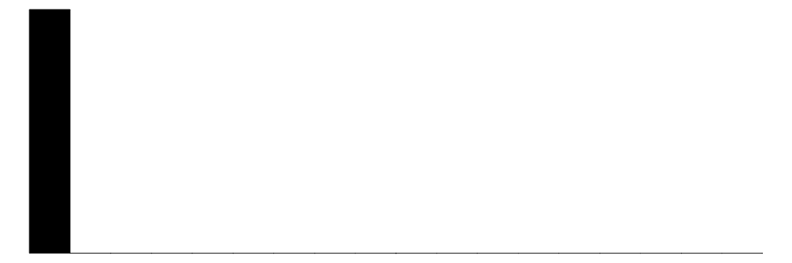 |
| Year Sold | 3 | 0 | 2,021.86 | 0.80 | 2,021.00 | 2,022.00 | 2,023.00 | 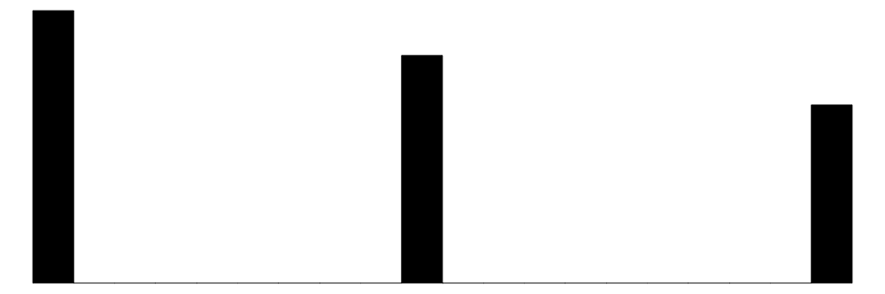 |
| N | % | |||||||
| Property Type | Detached | 733978 | 23.11 | |||||
| Flats/Maisonettes | 574292 | 18.08 | ||||||
| Other | 175511 | 5.53 | ||||||
| Semi-Detached | 833365 | 26.24 | ||||||
| Terraced | 858805 | 27.04 | ||||||
| Old/New | Established Residential | 2825957 | 88.98 | |||||
| Newly Built | 349994 | 11.02 | ||||||
| Tenure | Freehold | 2429919 | 76.51 | |||||
| Leasehold | 746032 | 23.49 |
| Mean | SD | Min | Median | Max | |||
|---|---|---|---|---|---|---|---|
| Price Paid | Property Type | Detached | 502,736 | 464,423 | 795 | 405,000 | 65,000,000 |
| Flats/Maisonettes | 324,103 | 551,921 | 10,000 | 233,000 | 111,000,000 | ||
| Other | 1,230,287 | 6,876,602 | 100 | 296,000 | 900,000,000 | ||
| Semi-Detached | 307,159 | 286,018 | 1 | 253,000 | 39,500,000 | ||
| Terraced | 284,431 | 396,265 | 1 | 215,000 | 73,200,000 | ||
| Old/New | Established Residential | 402,790 | 1,770,385 | 1 | 267,000 | 900,000,000 | |
| Newly Built | 380,106 | 607,078 | 100 | 320,000 | 163,265,000 | ||
| Tenure | Freehold | 417,712 | 1,657,053 | 1 | 290,000 | 900,000,000 | |
| Leasehold | 343,547 | 1,760,100 | 100 | 220,000 | 523,000,000 | ||
| Year Sold | 2021.86 | 0.80 | 2021.00 | 2022.00 | 2023.00 |
4.2.2 Histogram
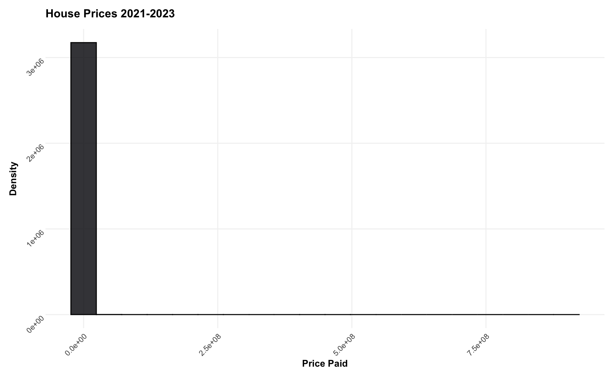
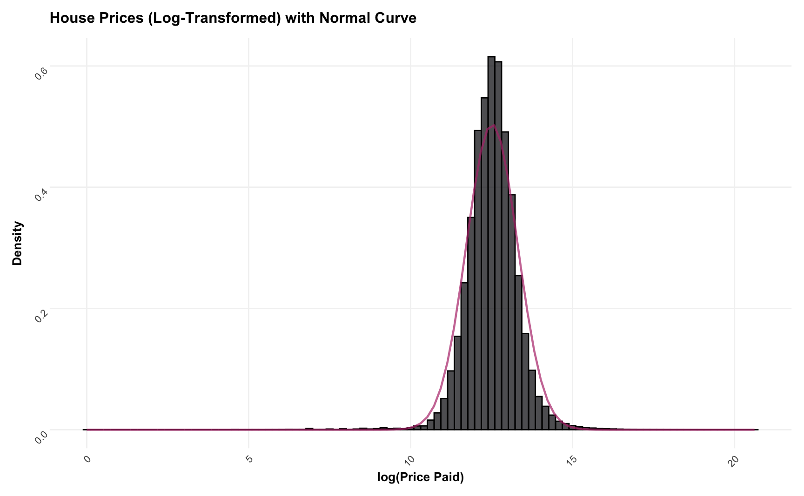
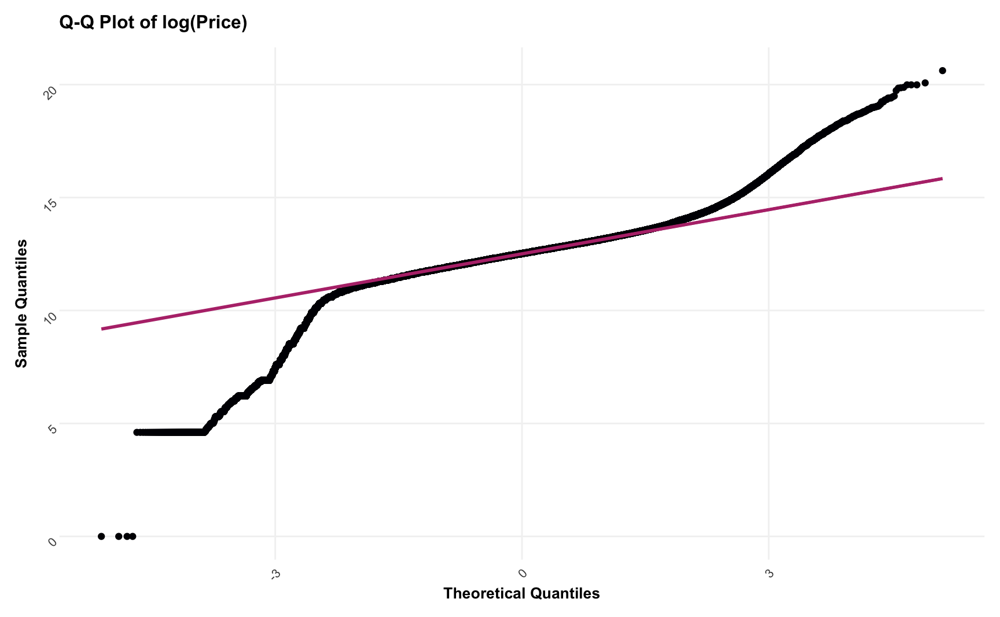
4.2.3 Temporal House Sale Distribution
House sales appear to be uniform over 2021-2023 in terms of both average sale price and volume of sales. There are a few exceptions in 2021, possibly due to the Covid-19 pandemic (but I have not looked further into this).
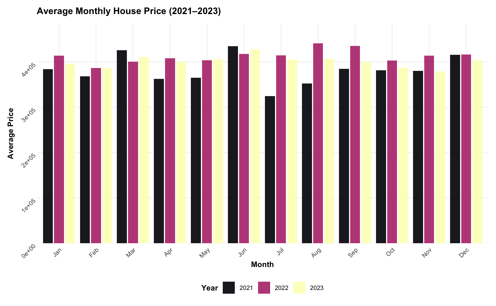
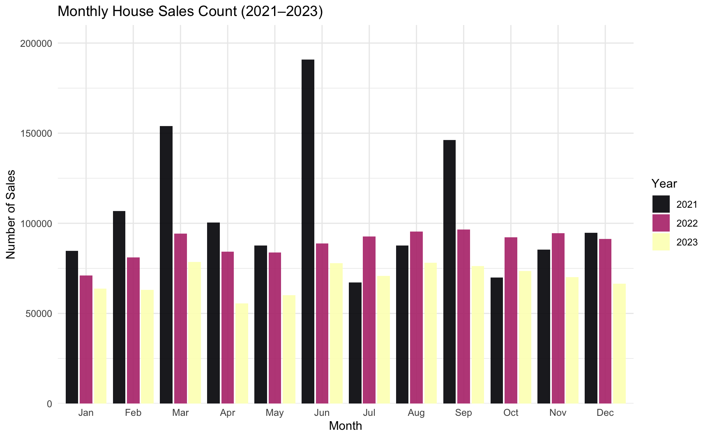
4.3 House Price and Sewage Spills Descriptive Statistics
4.3.1 Cross section
I begin by examining the cross-sectional relationship between house prices and sewage spills, which can be characterised along three main dimensions: (i) house prices, (ii) spill severity (measured by the number of spills or the spill duration), and (iii) the distance to the nearest spill.
Each house sale is spatially matched to all spill sites within a 5km radius, allowing me to compute the average spill severity and the average distance to the nearest spill for different distance thresholds. This allows me to see if there are any correlations between house prices and spill severity or distance.
4.3.2 Summary Tables
I present summary statistics for the spill data aggregated over both (i) different distance thresholds and (ii) spill count quartiles within a 2km radius. I use the entire dataset, trimming the house prices to the 5th and 95th percentiles (as I don’t believe these belong to the distribution we are interested in).
There are a few patterns that stand out:
- House prices increase within buffers of increasing distance from spill sites.
- House prices decrease across spill count quartiles.
- House prices remain positively skewed, even after trimming the 5th and 95th percentiles.
- Spill counts are positively skewed (as we also saw in Section 3.2.2)
4.3.3 Bivariate Plots
Below I plot the relationship between house prices and spill severity (spill count and spill duration), distance to spill sites, and spill severity weighted by the inverse of the distance to the nearest spill (accounting for the possibility that closer spills have a larger impact on house prices). I do this for a sample of 300,000 houses (approximately 3% of all houses in the dataset) to reduce computation time. I trim the data to the 5th and 95th percentiles of house prices (as I don’t believe these belong to the distribution we are interested in).
For each relationship, I plot a linear regression line and a local regression line (non-parametric) to show potential linear and non-linear relationships. I present these relationships using data aggregated over all years as well as data aggregated over the trailing 12-month period.
4.3.3.1 Spill Count
There’s a negative cross-sectional linear relationship between spill count and house price. The negative correlation is stronger both for (i) the trailing 12 months compared to the full time period and (ii) smaller distance thresholds.
For distance thresholds below 2km, the non-parametric fit shows a U-shaped pattern, likely due to a few properties with both high spill counts and high prices. However, as the distance threshold increases, the curvature of the U-shape flattens. I have to look further into this, but this may be driven by water company-owned properties, which could have higher prices and be exposed to more spills since they located closer to the spill sites (see also Section 4.3.3.3).
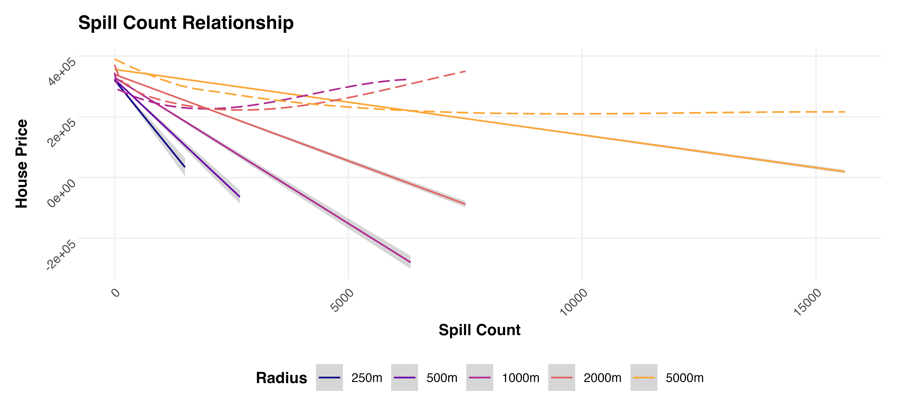
4.3.3.2 Spill Duration
The relationship between spill duration and house price is comparable to the relationship between spill count and house price. The confidence intervals are larger, suggesting greater statistical uncertainty. It seems plausible that there is greater variation in spill duration since duration records are influenced by extreme events or measurement errors that affect how long a spill lasts, whereas the 12/24 count method aggregates events more discretely.1
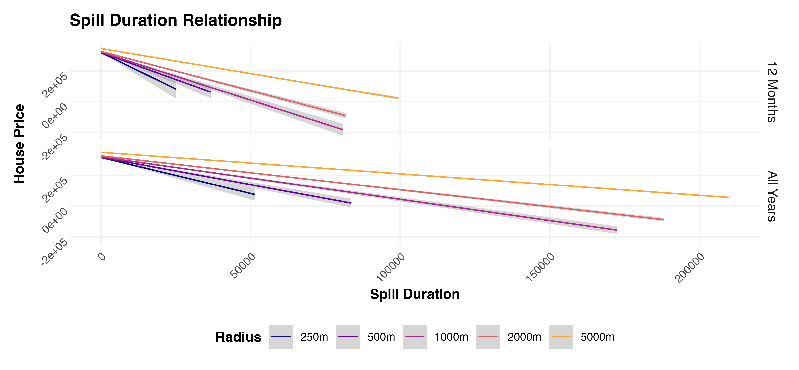
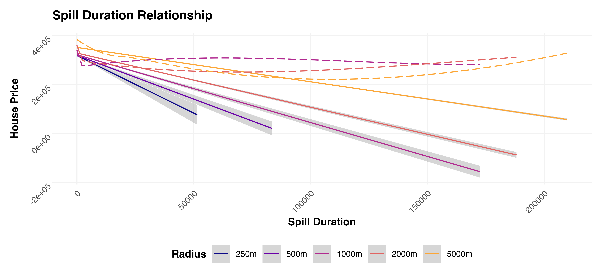
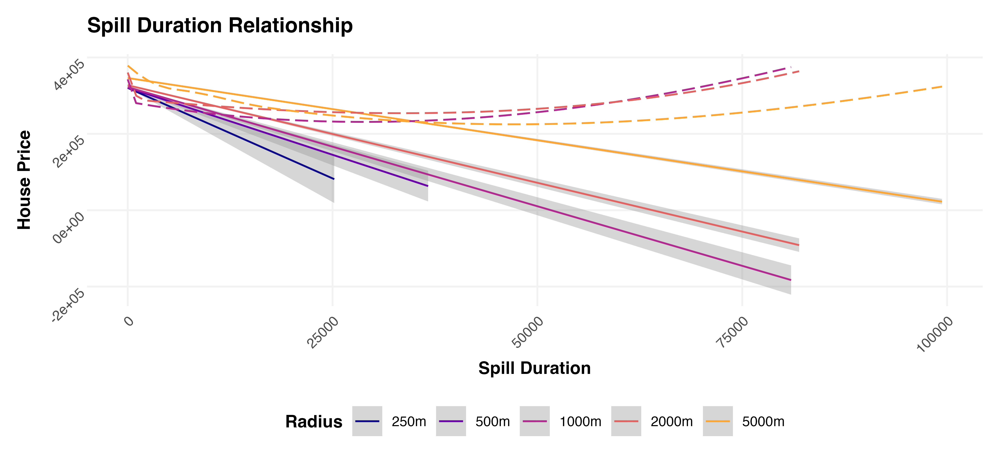
4.3.3.3 Distance
There’s a negative cross-sectional linear relationship between distance to the nearest spill site (within thresholds) and house price for tresholds below 1km, and slight positive relationship for larger thresholds. There are no apparent differences between the trailing 12 months and the full time period.
For all thresholds, the non-parametric fit shows a U-shaped pattern, which is consinstent with the story of water company-owned properties, which could have higher prices and be exposed to more spills since they located closer to the spill sites (see also Section 4.3.3.1).
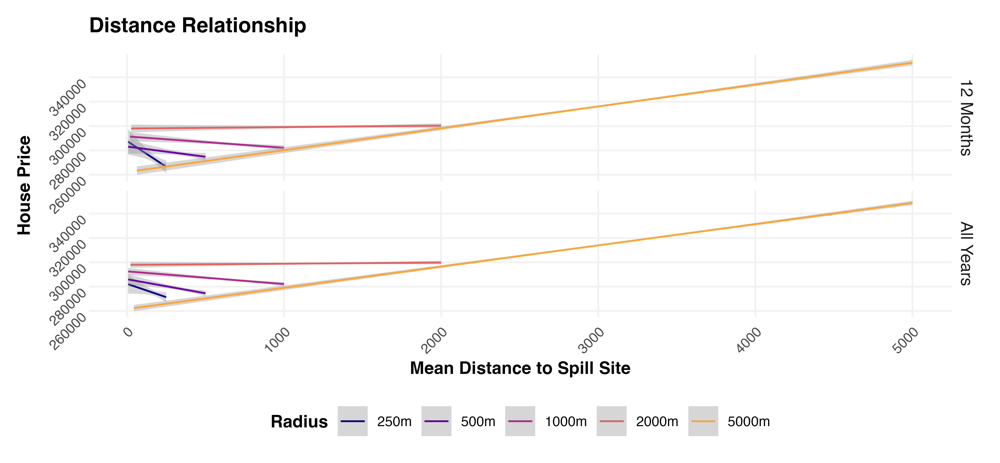
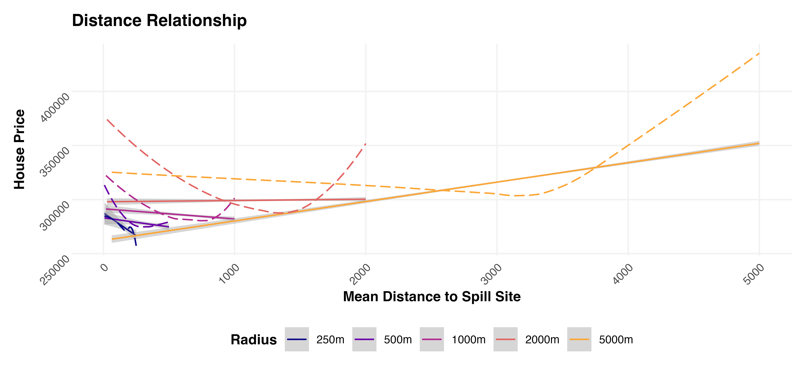
4.3.3.4 Inverse Spill Count - Distance
There’s a negative cross-sectional linear relationship between inverse spill count and house price. The negative correlation is stronger both for (i) the trailing 12 months compared to the full time period and (ii) the larger distance thresholds. Additionally, the non-parametric fit shows a U-shaped pattern. Both of these observations are consistent with the story of water company-owned properties, which could have higher prices and be exposed to more spills since they located closer to the spill sites (see also Section 4.3.3.1 and Section 4.3.3.3).
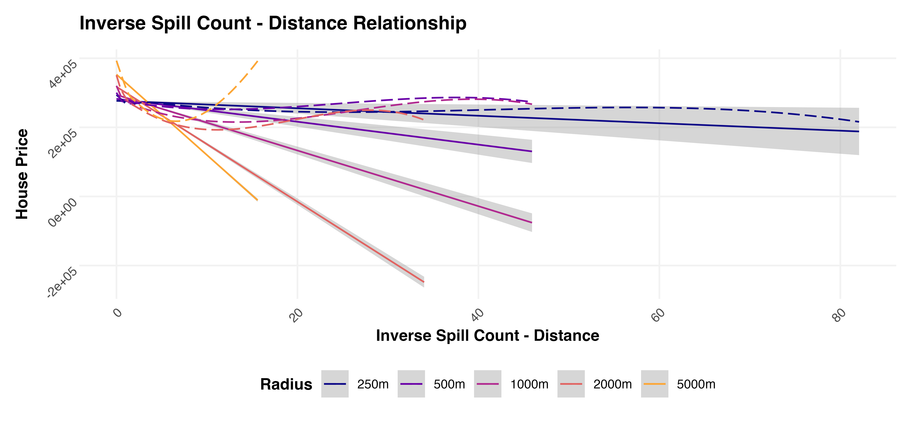
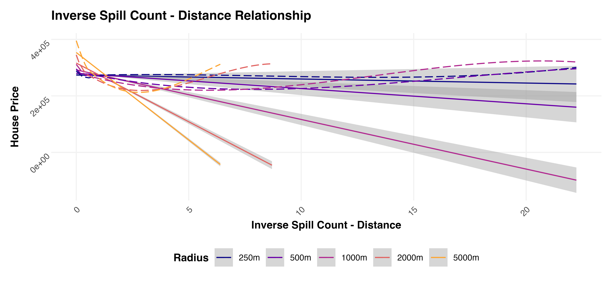
Start counting when the first discharge occurs. Any discharge (or discharges) in the first 12-hour block are counted as one spill. Any discharge (or discharges) in the next and subsequent 24-hour blocks are each counted as one additional spill per block. Continue counting until there is a 24-hour block with no discharge.↩︎